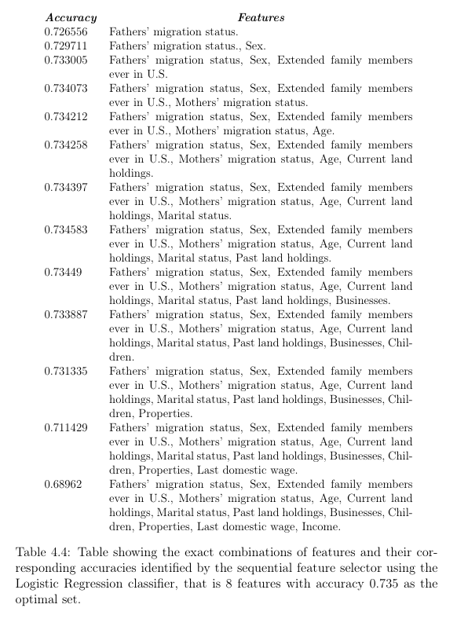

Agent Based Modelling in Migratory Behaviour in Response to Policy.
Abstract
Gaining a better understanding of emerging patterns in society can aid policymakers formulate policies capable of better guidance of decision-making, resulting in more rational outcomes. Human migration flow is an example of an emergent phenomenon in societies resulting from the decision-making of individuals. Research in human migration flow, in its early years, was largely dominated by simplistic models that hindered the understanding of this complex branch of knowledge to its full extent. However, with the development of more sophisticated computer simulations, research in migration flow has welcomed a new wave of potential discoveries in recent decades, with more dynamic approaches by different domains from computer science to psychology.
Research in migration flow is still growing, and this thesis attempts to fill the gap between the quantitative analysis of different drivers of human migration and their implementation in agent-based models (ABMs). In doing so, this thesis extracts an optimal set of features that have the largest influence on migration decision-making for first-time migrants, including Fathers’ migration status, extended family members ever in U.S., Sex, Mothers’ migration status, current land holdings, past land holdings, marital status, and age. These features are implemented in a simple empirical ABM simulation that can predict migration decisions with 0.896 accuracy compared to theoretical results produced by a classification algorithm.
Data
Data analysed in this study are sourced from the Mexican Migration Project (MMP). The MMP is a collaborative research project based at Prince ton University and the University of Guadalajara. According to the MMP website, the MMP data must only be used for research and/or educational purposes, the data must not be used to identify any individual, household or migrant community, and the accessed data must not be shared to anyone who does not agree to respect these confidentiality terms. Their most up to date database, MMP174, spans from the period of 1987 to 2019. The dataset includes 27,706 Mexican households and 1,075 U.S. households containing, in total, 179,321 individuals.
The main advantage of using data from the MMP as opposed to other data sources such as OECD is that the features intended for analysis in this study were all readily available in one place in the MMP database. A disadvantage, however, is that the data source used here is lim ited to one geographical region, that is Mexico. Therefore, an advantage of using another data source, say OECD, would have been the ability to access data from various regions which could make the results of this study more generalisable to different migration scenarios.
Data Analysis
The “HOUSE” dataset from MMP174 database is explored in this data anal ysis. This dataset contains 28,781 observations and 548 variables. The vari ables in this dataset contain information about household composition, mari tal information, social networks, and physical capital. From the 548 variables only 32 are considered in our data analysis which are related to the head of households. The 32 variables include age and sex as well as marital history, income, number of sons, number of daughters, father and mothers’ migra tion history, number of extended family members ever migrated to U.S., land holdings owned currently and previously, property holdings, business hold ings, and number of U.S. trips, see table 4.1. These specific variables are chosen because they correspond to the factors identified in Klabunde 2014 and are important features that affect migratory behaviour. However, it is important to note that not all features essential to migratory behaviour, as identified by Klabunde 2014, are considered. The features that are related to return migration such as green card status, documentation used for trip, and last U.S. wage, are not included since the scope of this study does not include return migration. The features identified in this section (see table 4.1) are processed in the data pre-processing section and analysed using machine learning algorithms in the feature selection and feature importance sections. It is ideal to use machine learning algorithms for our data analysis because we have plenty of observations in our dataset, therefore, the machine learning algorithms can be optimally trained and produce meaningful results. Also, this process is faster than manually calculating different metrics for all the features.
Data Pre-processing
Before analysing the data, it is important to process the 8888 and 9999 values within the dataset because these are coded values. Table 4.1 shows that all 8888 values represent “no observations”. Therefore, 8888 values can also be represented by zeros. An exception to this, however, is the variable representing number of U.S. trips. In this variable, 8888 values represent individuals born in the U.S., and since this study is analysing Mexico to U.S. migration, 8888 observations in the number of U.S. trips are removed from the dataset. 9999 values represent unknown values. This means that observations encoded by 9999 may exist, but they are not known. One option of processing these values would be to remove them from the dataset entirely, but 9999 values make up for at least 74% of the observations in the dataset from the Income variable alone (see table 4.2) and since further analysis of the data will require training machine learning algorithms using the data, removing them can result in an under-fitted model and therefore produce inaccurate results. Hence, 9999 values will be replaced by the most frequent values observed from the existing observations of the dataset. Note that these 9999 values will be processed separately for each of the data analysis processes, that is feature selection and feature importance. This is due to the fact that the feature selection process will require splitting the data into training and testing sets, and if 9999 values are not treated carefully, data leakage will occur and create inaccurate results.
Further data modification is performed to generalize the data. From table 4.1 we can see that the variables representing physical capital of individuals such as lands, properties, and businesses are observed in 4 instances, and each instance is coded by the category of the variable. To get a more gen eralized measure of the effects of physical capital on migratory behaviour, the four instances for each of these variables are combined regardless of their category to give a measure of the total lands, properties, and businesses owned by each individual, ranging from 1 to 4. A disadvantage of this pro cess is information loss. For example, ignoring the types of lands prevents measuring the effects of different types of land owned on migration. How ever, for further study, one could use dummy variables to include all types of lands, properties, and businesses owned to further measure their effects on migration patterns. We perform this process on several variables; sons and daughters are combined to give number of children; number of uncles, cousins, nieces, siblings, children in law, and parents in law ever in the U.S. are combined as number of extended family members ever in the U.S. Next, to understand the effect of parents’ migration status on migration patterns, the mother and fathers’ migration history which is represented by their first migration date in the dataset are modified by converting any non-zero obser vations to 1. This classifies each individuals’ mother and father as migrants or non-migrants. Similarly, the Union type variable is modified to 0 or 1 classifications generalising individuals’ marital status in the dataset. After modifying the data, 14 features are extracted from the raw dataset (see 4.3). These features are used in the feature selection section to extract an optimal set of features based on their influence on the migration status classification of individuals.
Feature Selection
Asequential feature selector is used with a classification algorithm to categorically identify the optimal number of features in the modified dataset. Using a sequential feature selector is ideal as it allows rapid analysis of differ ent combinations of variables in the dataset to find the set with the optimal performance. This process measures and compares the ability of the classifier to predict individuals’ migration status using different combinations of fea tures from the dataset, resulting in the combination with the best predictions as the optimal set of features. Three classifiers are considered for this pro cedure: Logistic Regression, Naïve Bayes, and K-Nearest Neighbours (knn). These classifiers are discretely trained on 75% of the dataset and tested on the remaining 25% before comparing each classifier based on their accuracy. Accuracy is the measure of the classifiers’ ability to predict true positive and true negative classifications. This is an ideal metric for this study as the cost of false positives and false negatives are relatively low. The matrix of features used to train and test the classification algorithms are all the fea tures shown in table 4.3, except for Total number of U.S. trips. Assuming the number of U.S. trips can be generalised as the classification of individ uals’ migration status, regardless of the exact number of trips, the number of U.S. trips variable is used to derive the dependant variable in this part of the data analysis by converting any observations with non-zero number of migrations to 1, classifying individuals as migrants (1) or non-migrants (0). Before performing feature selection, an optimal number of neighbours in the knn algorithm must be determined. This is done by measuring and plotting the accuracy of the classifier with a range of neighbours from 1 to 50 (see figure 4.1). In the graph shown in figure 4.1 we can see that the knn algorithm performs best with 16 neighbours with a maximum accuracy of 0.702.
Figure 4.2 shows the results from the feature selection process. In this fig ure in can be seen that the Logistic Regression classifier successfully identified 8 features (Fathers’ migration status, Mothers’ migration status, Extended family members ever in U.S., Sex, Marital status, Age, Total current land holdings, and Total past land holdings) with the highest accuracy of 0.735, outperforming Naïve Bayes and knn classifiers. Table 4.4 shows the exact combinations of features from 1 to 13 features(s) and their corresponding accuracies identified by the sequential feature selector using the Logistic Re gression classifier.
Feature Importance
Assuming the correlation between a feature and the number of U.S. trips can represent the importance of that feature in an individuals’ decision to migrate, a Linear Regression algorithm is used to measure the relative im portance of the optimal set of features. In this process, the Linear Regression algorithm is trained on the dataset using the optimal set of 8 features as the independent variables, and the total number of U.S. trips as the dependant variable. This algorithm describes the relations between the features and the number of migrations by individuals according to the linear equation shown below.
y =c0 +c1x1 +c2x2 +c3x3 +c4x4 +c5x5 +c6x6 +c7x7
Subsequently, a set of predicted values are produced by feeding the inde pendent variables into the regression model once more. Next, multiplying the respective coefficients, cn, of each variable, calculated by the regression model, by the standard deviation of each variable in the dataset, the relative importance of the variables is calculated. Table 4.5 shows these values for each feature. Visualising the normalized importance values in figure 4.3, Fa thers’ migration status shows the highers importance with 100% importance followed by Sex showing about 40% importance. Exact values shown in table 4.5.
Conclusion
This study has explored a set of influential features in human migration to find the most important features affecting the decision to migrate. This pro cess took place in two steps; firstly, using a sequential feature selector applied to data extracted from the MMP174 database to identify the optimal set of features in the data. Secondly, conducting a linear regression analysis to find the relative importance of each feature in the optimal set to find the exact measure of importance each feature has in deciding to migrate. Results from the first step showed 8 features (see table 4.4), that is Fathers’ migration status, Sex, Extended family members ever in U.S., Mothers’ migration status, Age, Current land holdings, Marital status, Past land holdings to be the optimal set of features with a maximum classification model accuracy of 0.735 produced by the Logistic Regression classifier used in the sequential feature selector. A limitation affecting this result is the fact that the Income and the Last domestic wage variables contained a considerable number of missing values, 21403 and 16657 missing values, respectively. These income variables are strong indicators of individuals’ capability of migration which ties in heavily in the decision to migrate . This can also be seen from the importance indicated by the Total past and current land holdings attributes, in the feature importance analysis, that did not contain as many missing values (see table 4.2), as these features are also strong indicators of an individuals’ economic capital. Furthermore, network effects have also shown a very strong influence in the decision to migrate through father and mothers’ migration status as well as extended family members ever in the U.S. This is promising since network effects have been identified as influential to migratory behaviour by many studies, due to the strong correlation between networks and migratory behaviour, since net works can make the migration process easier for new migrants by providing initial support, according to Klabunde et al. 2016. For future work, more accurate data related to income variables of individuals would help to get a better understanding of how income affects the decision to migrate. An assumption made in the data analysis is that the number of U.S. trips can be generalised as the classification of individuals’ migration status, regardless of the exact number of trips. This assumption overlooks the fact that some of the features may have had different values at the time of individuals’ first migration. This generalisation reduces the precision of the results found in the data analysis, therefore, for future work more precise data would help to improve the results in this study.
Applying a linear regression model to the optimal set of features and the level of migration show that Fathers’ migration status and Sex normalized importance values of 100 and 41, respectively, have the highest impact on levels of migration between the optimal set of features identified in this study (see figure 4.3). These findings are promising as they highlight the impact of networks, idiosyncratic home bias, and gender of individuals on the migra tion decision, in agreement with other studies. An assumption made in this process is that the correlation between features and the level of migration can be translated into the importance of that feature on the decision of an individual to migrate. This generalisation is a source of uncer tainty in the data analysis. A way of mitigating this source of uncertainty would be to carry out a survey asking individuals what their perceived level of importance is on each of the variables on their decision to migrate.